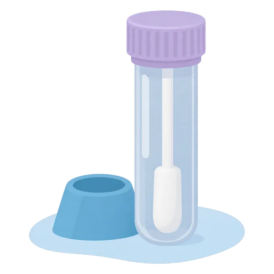
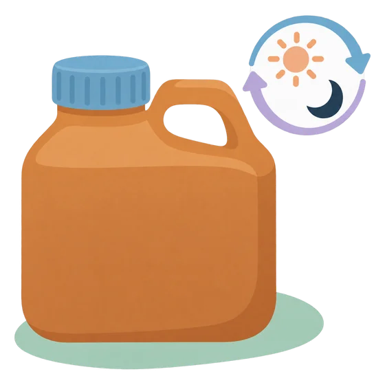
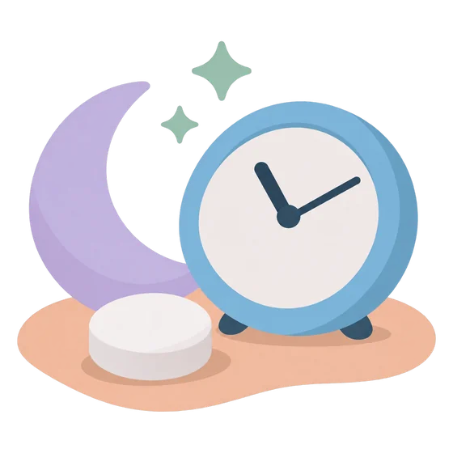
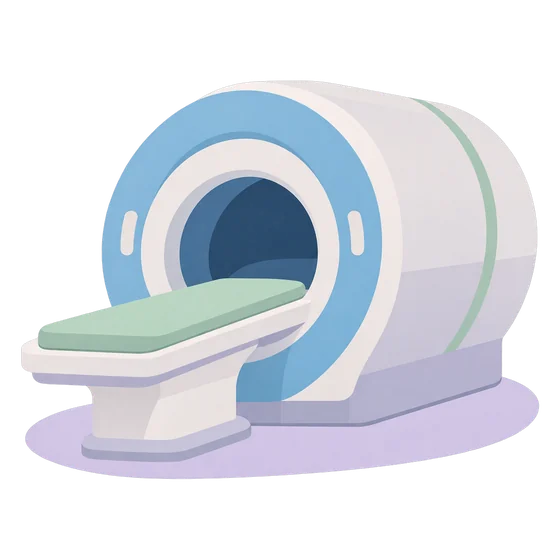

Entiende tus exámenesUnderstand your tests
Estas son algunas pruebas que pueden pedirte para saber si hay exceso de cortisol y de dónde viene. Sigue siempre las instrucciones de tu laboratorio: pueden variar entre centros.These are some tests you may be asked to do to find out whether there is excess cortisol and where it comes from. Always follow your lab's instructions: they may vary between centers.
Borrador pendiente de revisión clínica.Draft pending clinical review.

Cortisol en salivaSaliva cortisol
Mide el cortisol por la noche, cuando normalmente debería estar bajo. Se recoge en casa con un tubo especial, a la hora de acostarte o a la que te indiquen.
Measures cortisol at night, when it should normally be low. You collect it at home with a special tube, at bedtime or at the time you are told.
- No comas, bebas, fumes ni te cepilles los dientes durante el tiempo previo que indique el laboratorio.
- Evita tocar el algodón con manos que tengan cremas con corticoides.
- Suelen pedirse al menos dos muestras, en noches distintas.
- Do not eat, drink, smoke or brush your teeth for the time beforehand indicated by the lab.
- Avoid touching the swab with hands that have steroid creams on them.
- Usually at least two samples are needed, on different nights.

Orina de 24 horas24-hour urine
Mide todo el cortisol que eliminas en un día completo.
Measures all the cortisol you pass in a full day.
- Al empezar, orina en el inodoro y anota la hora: esa primera orina no se guarda.
- Desde entonces, recoge toda la orina hasta la misma hora del día siguiente, incluida esa última.
- Guarda el recipiente en un lugar fresco. Si se pierde alguna orina, avisa: puede alterar el resultado.
- To start, urinate in the toilet and note the time: that first urine is not kept.
- From then on, collect all urine until the same time the next day, including that last one.
- Keep the container somewhere cool. If any urine is missed, tell the lab: it can affect the result.

Prueba con dexametasonaDexamethasone test
Valora cómo responde tu organismo a un corticoide. Tomas una pastilla por la noche, a la hora indicada, y a la mañana siguiente te sacan sangre.
Checks how your body responds to a steroid. You take a tablet at night, at the time you are told, and a blood sample is taken the next morning.
- Algunos medicamentos, como los anticonceptivos con estrógenos o ciertos antiepilépticos, pueden alterar el resultado. Informa a tu equipo de todo lo que tomas.
- Some medicines, such as estrogen-containing contraceptives or certain antiepileptics, can affect the result. Tell your team everything you take.

ACTH e imágenesACTH and imaging
Cuando se confirma el exceso de cortisol, un análisis de sangre de ACTH ayuda a saber si el origen está en la hipófisis o en otra parte, o en las suprarrenales. Después pueden pedirse imágenes: resonancia de la hipófisis, tomografías de otras zonas o pruebas de estímulo.
Once excess cortisol is confirmed, an ACTH blood test helps tell whether the source is the pituitary or elsewhere, or the adrenal glands. Imaging may follow: a pituitary MRI, scans of other areas or stimulation tests.
En algunos casos se necesita un cateterismo de senos petrosos: un procedimiento que se hace en hospitales especializados para medir la ACTH cerca de la hipófisis.
Some people need petrosal sinus sampling: a procedure done in specialized hospitals to measure ACTH close to the pituitary.
¿Por qué no me dan el resultado con un número claro?Why don't I get a clear number as a result?
Los valores normales dependen del laboratorio y del método, y un resultado aislado puede salir alterado por estrés, otros medicamentos u otras enfermedades. Tu equipo interpreta cada resultado en conjunto con los demás y con tu historia. Si tienes dudas sobre un resultado, pregúntales.Normal values depend on the lab and method, and a single result can be abnormal because of stress, other medicines or other illnesses. Your team interprets each result together with the others and your history. If you have questions about a result, ask them.